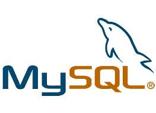

MySQLAbout MySQLMySQL ( "My Sequel") is the world's second most widely used relational database management system (RDBMS) and most widely used open-source RDBMS. It is named after co-founder Michael Widenius's daughter, My. The SQL acronym stands for Structured Query Language. The MySQL development project has made its source code available under the terms of the GNU General Public License, as well as under a variety of proprietary agreements. MySQL was owned and sponsored by a single for-profit firm, the Swedish company MySQL AB, now owned by Oracle Corporation. MySQL is a popular choice of database for use in web applications, and is a central component of the widely used LAMP open source web application software stack (and other 'AMP' stacks). LAMP is an acronym for "Linux, Apache, MySQL, Perl/PHP/Python." Free-software-open source projects that require a full-featured database management system often use MySQL. FeaturesMySQL is offered under two different editions: the open source MySQL Community Server and the proprietary Enterprise Server. MySQL Enterprise Server is differentiated by a series of proprietary extensions which install as server plugins, but otherwise shares the version numbering system and is built from the same code base. Major features as available in MySQL 5.6:
 Click on the Image to view the complete MySQL Tutorial |